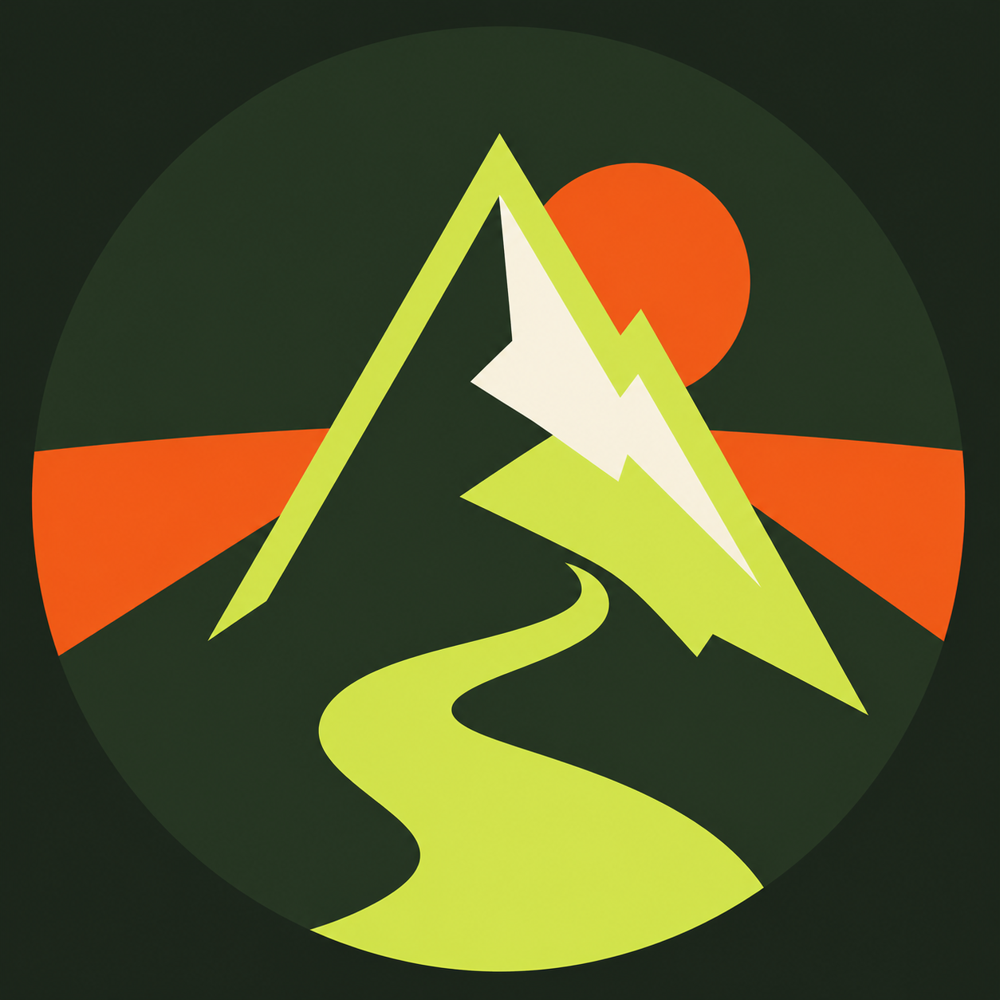

Check current conditions
Weather, fire restrictions, road access, and seasonal closures can change quickly. Confirm details with the managing agency.
CURATED OUTDOORS · SOUTHERN CALIFORNIA
Handpicked trails and campsites from the coast to the high desert, now backed by detailed route pages, regional hubs, and official conditions links.
OPEN THE HIKE GUIDES →THE FIELD GUIDE
Filter the original map, then open the detailed guide directory for route notes, photography, permits, seasonal context, and safety.
12 PLACES FOUND
The ranking foundation is now made of real, internally linked pages: individual hikes, descriptive regional hubs, and a Southern California hiking blog.
Eight route guides with distance, gain, seasons, permits, safety, photography, and official agency links.
BROWSE HIKES →02 / LOCAL CONTEXTPlan by landscape across the Santa Monicas, San Gabriels, San Diego, Orange County, Joshua Tree, San Jacinto, and Anza-Borrego.
EXPLORE REGIONS →03 / FIELD NOTESLonger guides to choosing a trail, protecting fragile places, and building a Southern California hike shortlist.
READ THE BLOG →
THE COMMUNITY TRAILHEAD
Swap trail conditions, share trip reports, suggest new places, and meet other hikers and campers exploring Southern California.
BEFORE YOU GO
Weather, fire restrictions, road access, and seasonal closures can change quickly. Confirm details with the managing agency.
Southern California is dry and exposed. Pack generously, start early, and turn around before heat or fatigue makes the choice for you.
Stay on durable surfaces, pack out everything, respect wildlife, and follow local fire rules.